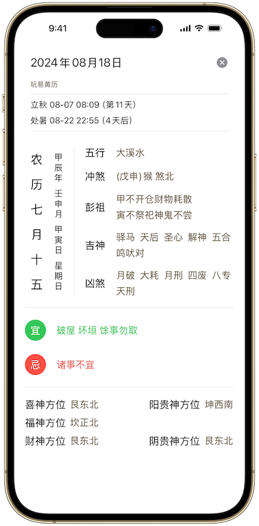
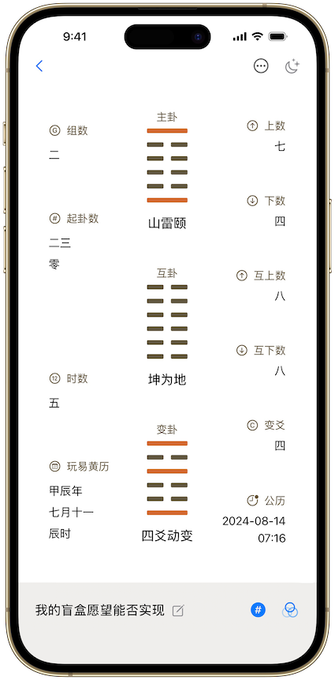

玩易黄历 周易研读 梅花易数 卦例分析 系统评分
深受“易”学爱好者推崇的梅花易数把玩工具，支持定制版老黄历、灵活的梅花易数起卦方式、卦例的保存和心得轨迹记录，更有玩易派定制算法针对卦例客观因素直观评分与详细解读，既在梅花易数入门者的好帮手，更在易学专研人员的必备工具。

玩易黄历
轻量级黄历，支持精确节气显示、干支历、传统五行、神煞、每日宜、忌事宜及诸神方位等，是您每日快捷日历查看的好帮手。
玩易 主页
主页快捷显示最近卦例及六十四卦速查，同时也是玩易黄历、所有卦例的入口，更是作为梅花易数起卦入口，支持多种快捷、自定义起卦方式，随时随地的满足您起心动念之需。

卦例 展示页
作为卦例的信息展示主视图，清晰直观展现梅花易数卦例的主卦、互卦、变卦信息，支持卦例的信息编辑与保存，更有暗夜显示模式，助力您的冥想视角。
玩易 评分系统
针对梅花易数卦例的客观数据评分系统，从主、互、变三个维度的体用关系、五行生克及卦气旺衰等方面因素进行综合评分，既是客观因素的直观展现，更是主观卦象预测不可或缺的基础依据。